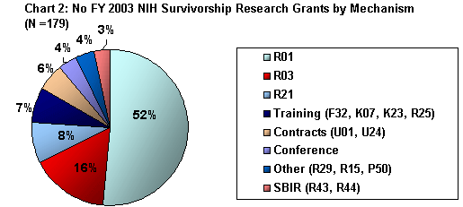
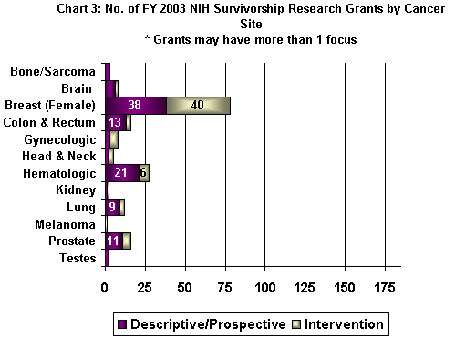
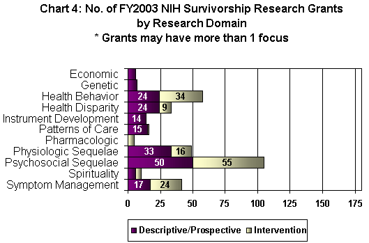
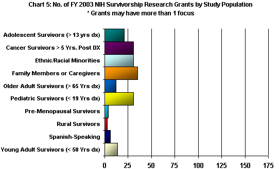

Cancer Control Research: OCS Analysis for FY 2003
Overview of the Fiscal Year (FY) 2003 National Institutes of Health (NIH) Cancer Survivorship Research Grant Portfolio
- For this portfolio analysis, survivorship research was defined as that which focused on the health and life of a person with a history of cancer beyond the acute diagnosis and treatment phase.
- Studies that examined newly diagnosed survivors or those in active treatment were included in the portfolio analysis if follow-up extended at least two months or longer post-treatment.
- Studies addressing recurrence or end-of-life research were not included in this particular analysis.
Chart 1 shows the distribution of the FY2003 survivorship research grant portfolio by federal government organization: The National Cancer Institute (NCI), and Other National Institutes of Health.
Chart 2 shows the distribution of the FY 2003 survivorship research grants by grant mechanism. R01 grants make up 52% of the portfolio.
Chart 3 shows the distribution of FY 2003 survivorship research grants by cancer site and study design. Female breast cancer is the most studied cancer site (N = 78) followed by hematologic cancer (N = 27). The majority of breast cancer grants are intervention studies (51% or N = 40) which examine the efficacy of a physiologic, psychosocial or health behavior interventions with breast cancer survivors.
Chart 4 shows the distribution of FY2003 survivorship research grants by grant focus and study design. Grants focused on psychosocial outcomes (N = 105) are the most prevalent areas of study followed by health behavior (N = 58) and physiologic (N = 49) outcomes. Over half of the psychosocial and health behavior grants are intervention studies.
Chart 5 shows the distribution of FY2003 survivorship research grants by primary study population (e.g. family caregivers, long-term survivors, pediatric survivors).
|
NCI: National Cancer Institute NINR: National Institute of Nursing Research NIA: National Institute on Aging NIMH: National Institute of Mental Health NICHD: National Institute of Child Health and Human Development NIDCR: National Institute of Dental and Craniofacial Research (d) (d) (d) (d) |